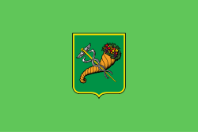
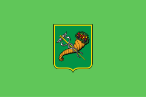

Ха́рків — місто України. Розташоване на північному
сході України на Слобожанщині, науковий центр України,
адміністративний центр Харківської області. Друге за кількістю
мешканців місто України з населенням 1 421 125 осіб. Площа міста
— 350 км². Разом із прилеглими містами та районами утворює
Харківську агломерацію з людністю понад 2 млн осіб. Місто-герой
України (з 2022).
З 19 грудня 1919 по 24 червня 1934 рр. Харків
був першою столицею Радянської України, звідси назва «перша
столиця».
Великий науковий, культурний, промисловий і транспортний
осередок України, був третім індустріальним центром у колишньому
СРСР. 60 науково-дослідних інститутів, 41 вищий навчальний
заклад[9], серед яких ХНУ імені В. Н. Каразіна, який входить до
найкращих 500 ВНЗ світу та НТУ «ХПІ», який входить до найкращих
1000[10], 8 музеїв, міська картинна галерея, 7 державних театрів і
кілька десятків недержавних, 80 бібліотек.
Володіє повним комплектом
нагород Ради Європи: Європейським Дипломом, Почесним Прапором,
Почесною Відзнакою і Призом Європи.
6 березня 2022 року
Указом Президента України з метою відзначення подвигу, масового
героїзму та стійкості громадян, виявлених у захисті своїх міст під
час відсічі збройної агресії Російської Федерації проти України
місту присвоєно почесну відзнаку «Місто-герой України».
 
